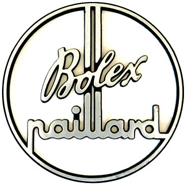
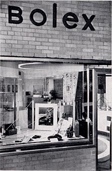

BOLEX LOGO DEALER SIGN
October 12, 2006 -- Bolexcollector.com
Here's a former item from my collection; I sold it with a camera a few years
ago. Unfortunately, I never took a picture of it. I was able to track down
the buyer and he was kind enough to provide this excellent picture:

It's approximately 7" in diameter, and about 1/2" thick. It's made of black anodized aluminum with a polished surface. I assumed it was meant to be hung on a wall or in a store window of a Bolex franchised dealer. While looking through the Christmas 1950 issue of the Bolex reporter, I noticed what appeared to be a similar sign hanging inside a glass door:

This picture is of the showroom floor of Paillard Products Incorporated, located at 265 Madison Avenue in New York. You can barely make out the sign in the doorway to the right.
A very big "thank you" to Mark Jeremias of Los Angeles for providing this photo! If anyone has any interesting Bolex dealer signs, material or displays, send an email to Bolex Collector. I'd love to know what other types are out there, and hopefully share them with visitors to this site.